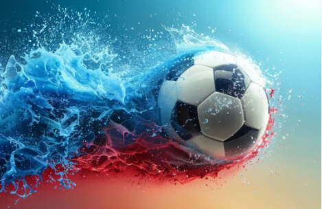
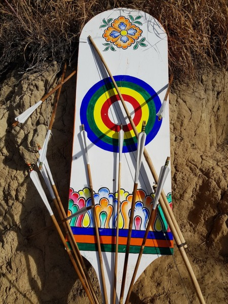

Playing Football
Football is not just a game to me; it's a passion. The thrill of being on the field, strategizing with my teammates, and giving my best is incomparable. Football brings out the competitive spirit in me and teaches valuable lessons of teamwork and resilience.
Playing Traditional Games
Traditional games hold a special place in my heart. These games are part of our culture, connecting us to our heritage. Whether it’s a friendly match or a festival gathering, traditional games bring a sense of community and joy that I always look forward to.
Traveling

Traveling is my way of exploring the world and learning about different cultures. Each place I visit offers unique experiences, memories, and inspiration. From scenic landscapes to bustling cities, traveling helps me expand my horizons and gain new perspectives.